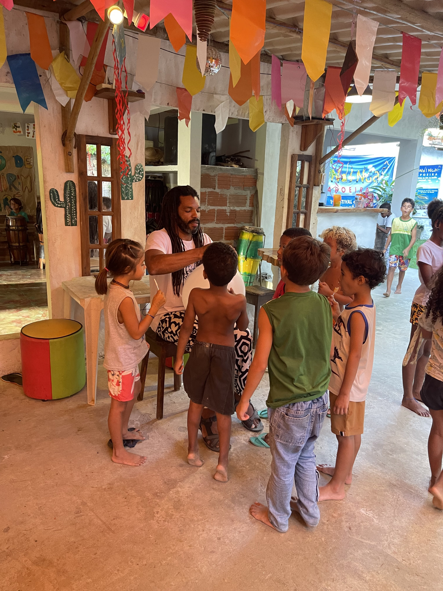

Itacare, Bahia
Where the practice happens

Capoeira at sunset, Itacare beach

Bico Duro, Tribo Bahia Mirim — partners with Agroverse

Bico Duro and the kids · Children's Day
45-minute solo practice sessions. Bico Duro's instruction. Berimbau rhythm. One move at a time.
Mestre Bico Duro and the kids of Tribo Mirim, in a street roda in Itacaré.
Learn capoeira fundamentals through individual move videos taught by Bico Duro, accompanied by traditional berimbau music.
Each session is 45 minutes. Six moves. One berimbau. You choose the theme — Foundation, Defense, Attacks, Flow, Aerials, or Floreios — and the platform sequences the moves, picks the music, and keeps time. No scrolling through videos. No guessing what to practice next.
The practice tool is free. If it helps you, support the kids who train with Bico Duro every afternoon in Itacare, Bahia.
"Capoeira is not a fight. It is a conversation." — Bico Duro, Tribo Bahia Mirim
Foundation, Defense, Attacks, Flow, Aerials, or Floreios. The generator picks a theme you haven't practiced recently.
Each move has a video, Bico Duro's instruction notes, and timed berimbau music. The timer keeps you moving.
Your session history, theme breakdown, move stats, and practice streak are saved locally in your browser.
Tribo Bahia Mirim is an after-school capoeira program for children in Baia Itacare, Bahia, led by Mestre Bico Duro. Every afternoon, kids train in the fundamentals of capoeira — ginga, kicks, escapes, and the music that holds the roda together. The program is free for the children. It runs on donations.
Bico Duro teaches precision over chaining: one move done cleanly is worth ten done sloppily. His students learn to listen — to the berimbau, to their partner's body, to the conversation that capoeira opens between two people.
Where the practice happens

Scan the QR code to access training videos. Save to your phone's home screen.
For the Dojo
Students and visitors scan the code to access 45-minute training sessions with videos and berimbau music.
On mobile: tap "Add to Home Screen"
100% of donations, minus Stripe and Wise transfer fees, go directly to Tribo Bahia Mirim's after-school capoeira program in Itacare.